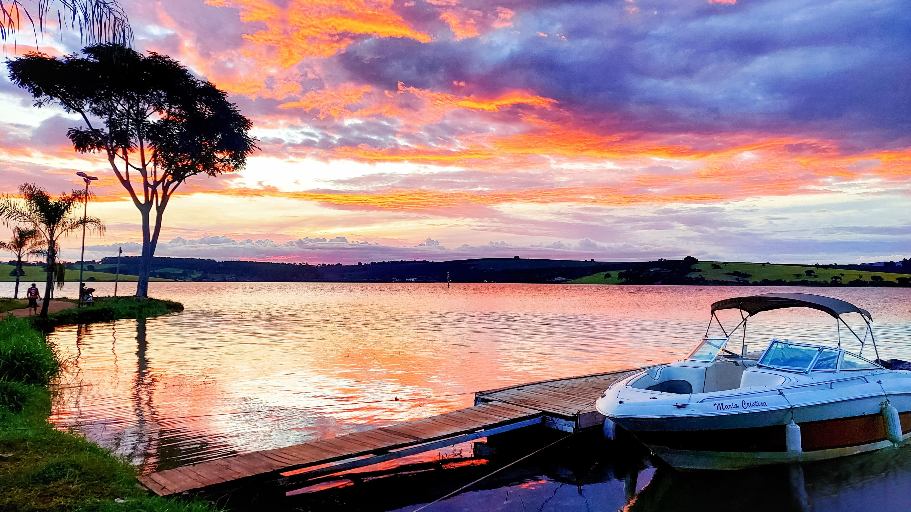
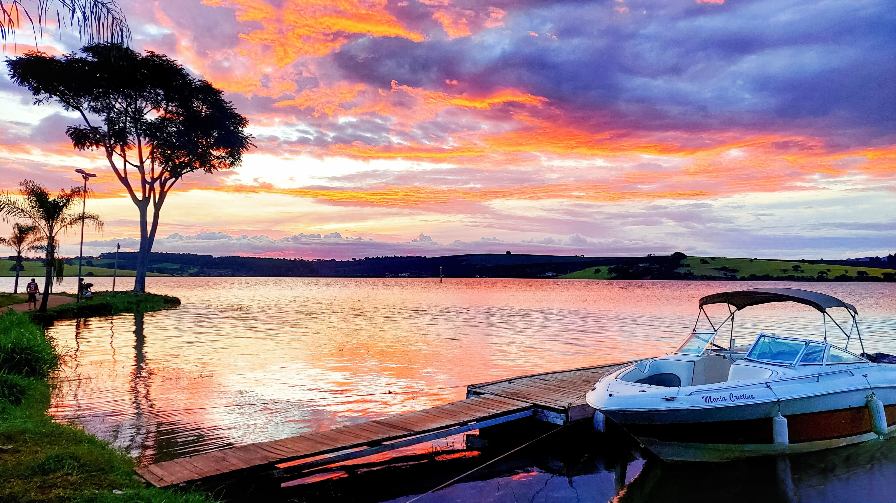

Um paraiso de historia em minas gerais
Bangalô é um dos encantos do município de guapé, uma construção antiga erguida em meados da década de 30, sendo uma das belas moradias que restaram da velha cidade. Considerado símbolo da resistência de Guapé, a casa marca a divisão do antes e depois das águas. Após a inundação da maior parte da antiga cidade na década de 60, o Bangalô se manteve totalmente firme, mesmo com as águas de Furnas atingindo seus porões, o que se compara ao lema de resistência do Brasão do município e às fortes raízes de seu povo.
Após permanecer décadas em meio às águas, a casa foi revitalizada e colocada para uso comercial, abrigando bares no fim da década de 80, e mais tarde, no ano de 2002, foi tombada como Patrimônio Histórico, levando oficialmente o título de Símbolo da Resistência. A construção hoje se tornou Casa de Cultura e recebe turistas de todos os cantos do Brasil e do mundo, oferecendo visitas guiadas e abrigando um rico acervo em fotografias, objetos e documentos que exibem com detalhes a rica história do município, destacando as grandes belezas de Guapé!

 

Um pouco da historia de guapé...
Guapé, no Sul de Minas Gerais, é um paraíso cercado pelas águas do Mar de Minas, com natureza exuberante, vistas deslumbrantes, festas culturais, culinária típica e um povo acolhedor. Conhecida por sua fé e resistência, a cidade tem uma história riquíssima. O nome "Guapé" vem da planta aquática aguapé, que na língua indígena significa "caminho sobre as águas".
Em 1924, pelo brilhante trabalho de Domiciano Augusto dos Passos Maia, primeiro prefeito, Guapé foi elevada à categoria de município. Nos anos seguintes, a cidade floresceu até a construção da Usina Hidrelétrica de Furnas, que inundou a maior parte da cidade na década de 60. Apesar da tragédia, o povo de Guapé reconstruiu a cidade, transformando-a em um destino turístico deslumbrante, tornando-a uma das mais belas riquezas de Minas Gerais!
Antes de se tornar um município, a região era habitada pelos indígenas Cataguá. Com a chegada dos bandeirantes em 1675, liderados por Lourenço Castanho, a terra foi colonizada. No início do século XIX, um forte terremoto levou Dona Esmeria Angélica da Pureza, moradora de uma grande fazenda local, a prometer uma capela a São Francisco de Assis pelo fim dos tremores. Após o milagre, seu marido, Capitão José Bernardes, fez a doação de terras e ergueu a capela dedicada ao santo, marcando o início da devoção local e do arraial.